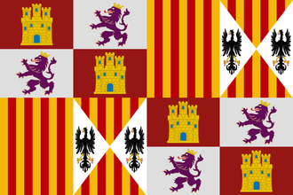

{kind=link}
| 伊比利亚 |
| 法兰西 |
| 低地 |
| 不列颠 |
| 北欧及波罗的 |
| 中欧 |
| 北德意志 |
| 南德意志 |
| 意大利 |
| 巴尔干及安纳托利亚 |
| 东欧 |
 | |
|---|---|
| 西班牙 | |
| 政府等级 | |
| 主流文化 | |
| 首都 | |
| 政体 | 独裁制 |
| 国教 | |
| 科技组 | |
| 西班牙的理念 |
此信息可能已落后版本，最后更新于1.35 ----
|
| +15% 陆军士气 +1 炮兵火力 |
| +5% 训练度
|
|
|
| “ | ” |
西班牙（英文：Spain，西班牙文：España）是一个可成立国家，能被伊比利亚文化组的国家成立。
脚本代码位于：/Europa Universalis IV/decisions/SpanishNation.txt。
 西班牙可以通过军事手段或者外交手段成立。不论通过哪种手段，成立西班牙都要求国家的
西班牙可以通过军事手段或者外交手段成立。不论通过哪种手段，成立西班牙都要求国家的  行政科技至少为 10 级，而且穆斯林国家已被驱逐出了伊比利亚——即目前所有伊比利亚区域的省份都不由穆斯林宗教组的国家拥有。
行政科技至少为 10 级，而且穆斯林国家已被驱逐出了伊比利亚——即目前所有伊比利亚区域的省份都不由穆斯林宗教组的国家拥有。
军事成立西班牙需要拥有并造核若干个重要的省份，对所有符合条件的国家可用；尽管如此，AI控制的  葡萄牙不会通过（以军事手段）成立西班牙的决议。
葡萄牙不会通过（以军事手段）成立西班牙的决议。
外交成立西班牙的决议则只对  卡斯蒂利亚和
卡斯蒂利亚和  阿拉贡可用——如果其中一方是另一方的附庸国，那么主导方可以通过外交手段成立西班牙。
阿拉贡可用——如果其中一方是另一方的附庸国，那么主导方可以通过外交手段成立西班牙。
|
|
这条信息可能已不适合当前版本，最后更新于1.35。 |
在新大陆的全面扩张以及殖民地的大量建立使得西班牙成为了当时最强大也最富有的国家之一。西班牙的探险者们不懈地探索着未知的地域，扩展着我们的疆界。无数的黄金白银被运回祖国，填满了国库。
潜在需求
|
接受 |
效果
| |
AI决议因子：

|
|
这条信息可能已不适合当前版本，最后更新于1.35。 |
在新大陆的全面扩张以及殖民地的大量建立使得西班牙成为了当时最强大也最富有的国家之一。西班牙的探险者们不懈地探索着未知的地域，扩展着我们的疆界。无数的黄金白银被运回祖国，填满了国库。
潜在需求
|
接受 |
| 效果 | |
AI决议因子：
当DLC 霸业启用时，西班牙使用新版的霸业任务，与卡斯蒂利亚共用。
霸业启用时，西班牙使用新版的霸业任务，与卡斯蒂利亚共用。
当DLC 霸业未启用而DLC
霸业未启用而DLC 黄金世纪启用时，西班牙将使用黄金世纪任务；除了在半岛的扩张和对新大陆的殖民之外，还给予了它更多巩固欧洲霸主地位的任务，其中包括了对
黄金世纪启用时，西班牙将使用黄金世纪任务；除了在半岛的扩张和对新大陆的殖民之外，还给予了它更多巩固欧洲霸主地位的任务，其中包括了对  英格兰、
英格兰、 奥地利等的野心。
奥地利等的野心。
当DLC 霸业未启用而DLC
霸业未启用而DLC 黄金世纪启用时，
黄金世纪启用时， 阿拉贡、
阿拉贡、 加泰罗尼亚、
加泰罗尼亚、 巴伦西亚、
巴伦西亚、 马略卡以及其他可能的
马略卡以及其他可能的  主流文化为阿拉贡或加泰罗尼亚的国家通过军事手段成立西班牙时，其获得的任务树是阿拉贡黄金世纪任务，而非西班牙黄金世纪任务。
主流文化为阿拉贡或加泰罗尼亚的国家通过军事手段成立西班牙时，其获得的任务树是阿拉贡黄金世纪任务，而非西班牙黄金世纪任务。 阿拉贡外交成立西班牙时，也不会刷新任务树。
阿拉贡外交成立西班牙时，也不会刷新任务树。
当DLC 霸业启用时，只有阿拉贡使用阿拉贡任务，并且成立西班牙依然沿用该任务；所有其他国家成立西班牙都会获得西班牙任务。
霸业启用时，只有阿拉贡使用阿拉贡任务，并且成立西班牙依然沿用该任务；所有其他国家成立西班牙都会获得西班牙任务。
当两个DLC均未开启时，所有国家成立的西班牙均使用西班牙基础任务。
西班牙有大量的历史趣味事件，而其中许多也被  卡斯蒂利亚共享。
卡斯蒂利亚共享。
在1490年到1590年期间，如果西班牙和  法兰西均在意大利地区控制至少一个省份，则两国会触发一个互相宣称对方领土的事件，代表了历史上的意大利战争。（译注：历史上，意大利战争的持续时间为1494年至1559年，主要参与方包括法国、西班牙等，有时也被称为“哈布斯堡-瓦卢瓦战争”）。 这一事件将会恶化两国之间的外交关系，还会增加战争爆发的几率。
法兰西均在意大利地区控制至少一个省份，则两国会触发一个互相宣称对方领土的事件，代表了历史上的意大利战争。（译注：历史上，意大利战争的持续时间为1494年至1559年，主要参与方包括法国、西班牙等，有时也被称为“哈布斯堡-瓦卢瓦战争”）。 这一事件将会恶化两国之间的外交关系，还会增加战争爆发的几率。
在1550至1650这一百年中，如果卡斯蒂利亚/西班牙与葡萄牙联姻，且都不为附庸或被联统，都信仰同一宗教，葡萄牙处于摄政议会的话，则会触发一个事件。接受则会使葡萄牙被西班牙联合统治。但这一事件发生的概率事实上很低。
在勃艮第继承危机中，卡斯蒂利亚/西班牙有可能获得瓜分勃艮第遗产的机会（前提为拥有至少6个非殖民地省份）。
如果西班牙宣布破产，那么则会触发西班牙国家破产的事件。
|
|
这条信息可能已不适合当前版本，最后更新于1.35。 |
虽然不是王储，但人们都认同年轻公主伊莎贝拉的才华和美德。作为强大的特拉斯塔玛拉家族的女儿，她还通过联姻获得了强大的盟友以支持她宣称王位。没人能预测王国的未来，但即使是那些不满于[Root.Monarch.GetName]统治的人，也承认伊莎贝拉作为[Root.Monarch.GetHerHis]继承人的权利。
| 触发条件 | 平均发生时间
200 月 |
王位应该是她的。
她的政治力量可以被用在其他地方。
| |
|
|
这条信息可能已不适合当前版本，最后更新于1.35。 |
出生于阿兹特克帝国和说玛雅语言的尤卡坦半岛边界的拉·马林切被她的家庭作为奴隶卖出，最终作为贡品被献给我了我们。起初她只会说纳瓦特尔语和一些玛雅方言，却不会说[Root.GetAdjective]语，在她的[Root.GetAdjective]语水平足够她独立翻译前，我们需要通过一位会说[Root.GetAdjective]语和一点玛雅语的翻译才能与进行交流。拉·马林切作为一个翻译和西班牙征服的积极参与者，她的地位如此之高以至于在本地的记载中几乎一直伴在西班牙征服者们的左右。许多征服者们都承认她对征服的重要性，不止一人认为她的贡献仅次于天主本人。
触发条件
|
平均发生时间
200 月 |
立即生效
| |
她将成为我们新一任的顾问！
让她成为一名征服者
真是有趣！
| |
|
|
这条信息可能已不适合当前版本，最后更新于1.35。 |
被称作「第十位缪斯」的胡安娜·伊内斯·德·拉·克鲁兹是一位自学成才的学者、一位巴洛克风格的诗人和一位哲罗姆会修女。为了如她所希望的那样尽情学习，她成为了一个修女，就如她所说的「不会有影响我学习自由的固定职业」。修道院的图书馆也随着她对书籍和文学作品的收集而丰富起来。在她的信《回复菲罗提亚修女》中，她对女性受教育权利的辩护也为她招致了许多神职人员的注意和谴责。
触发条件
|
平均发生时间
200 月 |
立即生效
| |
她听起来像是一个我们宫廷急需的有智慧的女人。
她的作品将会在全国范围内传播！
| |
|
|
这条信息可能已不适合当前版本，最后更新于1.35。 |
出生于西班牙埃斯特雷马杜拉省普拉森西亚的伊内丝·德·苏亚雷斯前往南美来寻找她的丈夫，却发现在她到达新大陆之前他就已经死了。她成为了佩德罗·德·巴尔迪维亚的远征队的一员，启程为这篇新领地建立首都。苏亚雷斯治疗团队中的病人和伤员，在沙漠中为他们寻找水源，并在当巴尔迪维亚的一个对手想要破坏他的团队并把他杀死的时候救了他一命。他们将城市建在了一个水源丰富的肥沃山谷之中，但是山谷中仍有许多不认同这些殖民者的原住民。伊内丝·德·苏亚雷斯带领着市民们击败了土著的一次袭击。穿戴着厚厚的甲胄，头上带着头盔，肩上披着皮制披风的她骑着白马集结着士兵们，并用豪言壮语激励着他们。她亲自带领着这些战士，最后将土著们彻底驱逐了出去。她的勇气使得我们获得了最后的胜利，要不是有她，这座城市恐怕就将沦陷，而殖民扩张也将受到阻挠。
触发条件
|
平均发生时间
200 月 |
立即生效
| |
她的勇气值得受到奖赏，任命她为顾问！
她是个真正的征服者！
她的勇气是伟大将领的标志！
| |
|
|
这条信息可能已不适合当前版本，最后更新于1.35。 |
「金花」阿娜卡奥娜因其所著的阿雷托——叙事曲与叙事诗——而闻名。她是一位泰诺族酋长，同时也是马瓜纳酋长卡奥纳博的妻子。卡奥纳博被指控组织袭击了西班牙移民点，遭逮捕后在被运往西班牙途中死于海难。欧洲人的虐待引起了泰诺人的反抗，但阿娜卡奥娜始终保持着克制——直到他们在一场诸酋长为她举办的宴会上放了把火。欧洲人将在场的酋长们活活烧死，并逮捕了阿娜卡奥娜和她手下的贵族。他们被指控反抗占领并被处决，除了阿娜卡奥娜——他们告诉她只要愿意当一位欧洲人的情妇，便可逃脱一死。就在她决定与族人共赴命运时，我军击溃了西班牙士兵，并解救了她和她的同伴们。
触发条件
|
平均发生时间
200 月 |
立即生效
| |
让她获得自由，并任命她为我们的顾问
没人会伤害她和她的同胞
| |
|
|
这条信息可能已不适合当前版本，最后更新于1.35。 |
长着一头鲜艳的红发并有着与头发一般火烈的脾气的海盗安妮·博尼与她的第二任丈夫，海盗船复仇号的船长杰克「花斑」雷克汉姆一同被捕了。博尼和雷克汉姆勇敢地抵抗着乔纳森·巴内特的部队，但因为他们的船员醉得太厉害而不得不投降被捕。雷克汉姆被绞死，但博尼以怀孕为由请求赦免，并最终获释。在儿子出生不就她便获得了自由身。他们夫妻两人在加勒比海域横行了数月，登上较小的商船并将上面所有的财宝全部劫走。博尼与男人们并肩战斗，用她在战斗中所表现的能力与技巧赢得了船员们的尊敬。我们可以利用这个女人的能力，让她成为一位海军将领或者是顾问。
触发条件
|
平均发生时间
200 月
|
立即生效
| |
那么就是顾问了。
让她成为海军将领，但是也许我们需要找人看着她
| |
|
|
这条信息可能已不适合当前版本，最后更新于1.35。 |
海盗船复仇号的船长杰克「花斑」雷克汉姆举办一场朗姆酒派对时，海盗猎手乔纳森·巴内特一轮齐射的攻击之下瞬间使他们的战舰崩溃了。此时船员们不是四处逃窜便是醉得无法战斗，只剩下玛丽·瑞德和安妮·博尼来抵抗巴内特的部队。他们最终被击败，船长雷克汉姆投降。这些海盗全部被捕，并因海盗罪名被判处绞刑。两位女子则以腹中的孩子求情，使得她们在孩子出生前暂时被赦免。玛丽·瑞德告诉了我们，在她加入雷克汉姆与博尼之前，她是一位船长遗孀的私生子。她的母亲把她打扮成男孩，并给她起名他马克，以便使她获得死去哥哥的祖母的救济。她少年时期曾当过一段时间的仆人，之后便开始了海员的生涯。这段时间，她仍然身着男装，加入了英国军队并在战斗中证明了自己的能力。在与一名佛兰德士兵坠入爱河之后，他们用军饷和军中朋友的礼物买了一家小旅馆，而直到他们结婚时，这些朋友们才知道「马克」原来其实是「玛丽」。他的丈夫年纪轻轻就去世了，于是她便重新穿上男装加入了军队，但当时没有战争，她也没有办法得到提拔。在退伍之后，她在船上被海盗劫持，并被迫成为了他们的一员。在受到了国王的赦免并被派往私掠船上服役后，她与船员一起哗变并重回了海盗的本行。之后她便碰到了海盗船船长杰克「花斑」雷克汉姆和他的同伴安妮·博尼。
触发条件
|
平均发生时间
200 月
|
立即生效
| |
真是可惜，等她生下孩子就要把她绞死。
赦免她，让她成为我们的一位海军将领。
| |

Forever Golden 永恒的黄金时代 完成西班牙任务树。 |

Imperio español 西班牙帝国 作为西班牙，让自己的殖民领拥有墨西哥、巴拿马、哈瓦那和库斯科。 |

Isn't this the way to India? 这不是去印度的路吗？ 作为卡斯蒂利亚或西班牙，发现美洲 |

Spain is the Emperor 西班牙是皇帝 作为西班牙，成为神圣罗马帝国皇帝。 |

No Country for Old Tercios 老方阵无所依 作为西班牙，拥有改良大方阵、33个大方阵单位，并且同时控制3个列强的首都。 |
| 伊比利亚 |
| 法兰西 |
| 低地 |
| 不列颠 |
| 北欧及波罗的 |
| 中欧 |
| 北德意志 |
| 南德意志 |
| 意大利 |
| 巴尔干及安纳托利亚 |
| 东欧 |
| 北非 |
| 东非 |
| 中非 |
| 东南非 |
| 西非 |
| 西南非 |
| 近东 |
| 波斯及中亚 |
| 北亚 |
| 东亚 |
| 东南亚 |
| 印度 |
| 中美洲 |
| 墨西哥 |
| 北美东北 |
| 北美东南 |
| 北美中西部 |
| 部落联盟国家 |
| 前殖民领国家 | |
| 海盗共和国 |
| 南美北部 |
| 安第斯山区 |
| 南美东部 |
| 南美南部 |
| 前殖民领国家 |
| 澳大利亚 |
| 南太平洋 |
| 北太平洋 |
| 前殖民领国家 |